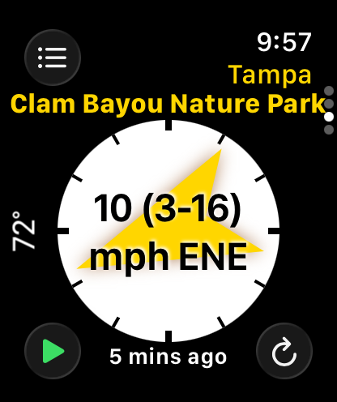
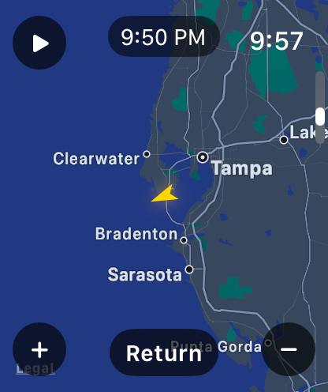
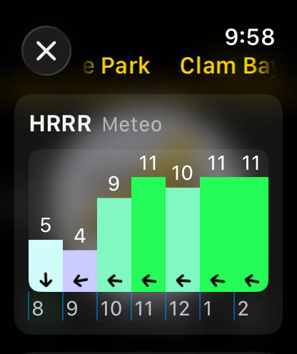
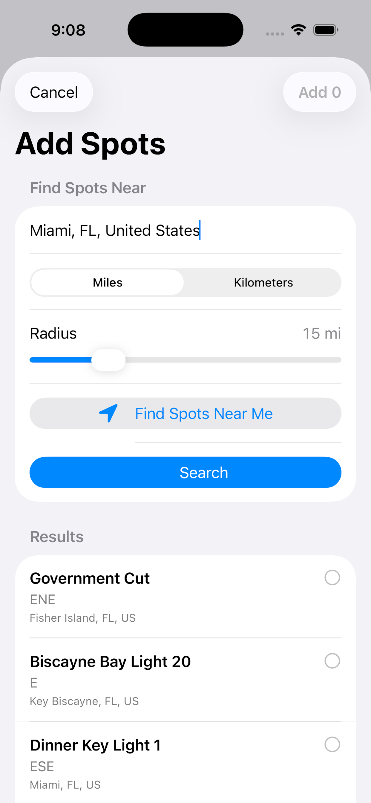
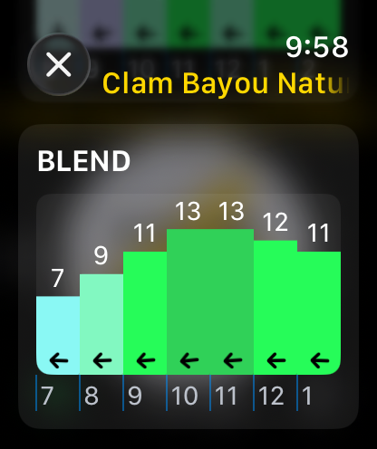
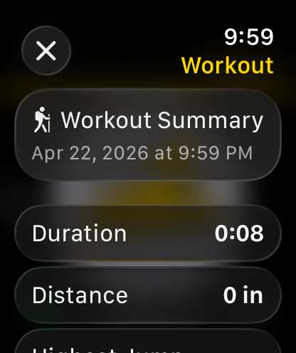
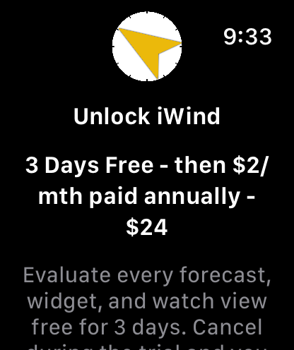

Favorite profiles and spots
Sign in once, choose a favorites profile, and browse every saved spot with its latest wind speed, direction, temperature, station source, and update age.
Apple Watch and iPhone wind intelligence
Live WeatherFlow network spots, favorite profiles, forecast models, radar, widgets, alerts, and water-session workout tools built for fast decisions before you rig.
What iWind does
Sign in once, choose a favorites profile, and browse every saved spot with its latest wind speed, direction, temperature, station source, and update age.
The watch detail view centers wind direction and speed in a large compass treatment, with clear color and station context for quick launch decisions.
Compare model guidance such as HRRR, NAM 3k, Blend, and WeatherFlow-specific forecast data in compact hourly charts right on Apple Watch.
Open radar from the watch, center it on your selected spot or current location, and see animated precipitation frames with the wind direction marker still visible.
Keep the selected spot visible outside the app with WidgetKit complications for corner, circular, inline, and rectangular Apple Watch families.
Start a session from the watch, optionally enable water lock, and review a summary when the workout ends.
Apple Watch
iWind keeps the watch experience dense and direct: profiles, spot tabs, wind compass, forecast charts, radar, settings, alerts, and workout controls live where your thumb can reach them.





iPhone companion
The iPhone app handles sign in, profile management, spot search, spot removal, and settings sync so the watch can stay focused on fast weather reads.
Forecasts and context
iWind combines the current station reading with model forecasts and radar, helping you decide whether the wind is filling in, fading, or bringing weather with it.



Personal setup
Choose mph, kph, or knots, switch temperature units, adjust map centering, set a haptic wind threshold, and pick a background style that stays readable outdoors.



Works with your wind account
iWind is made for wind sports users who already rely on WeatherFlow-powered services. It reads your authenticated profiles and spots, caches the latest snapshot for widgets, and keeps selection state in sync between iPhone, Apple Watch, and complications.